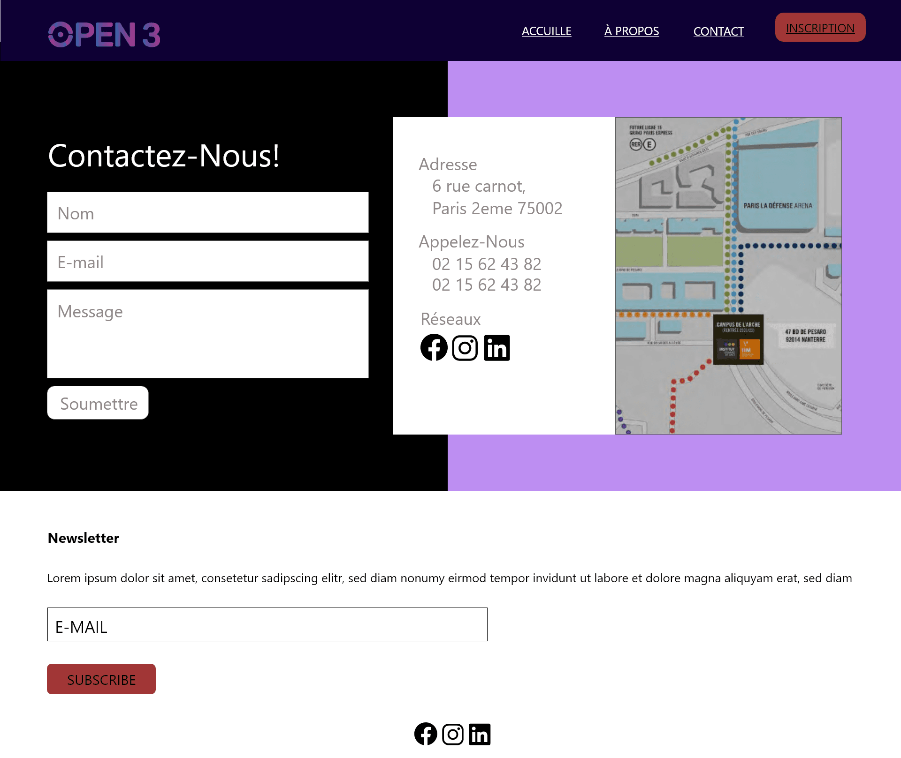
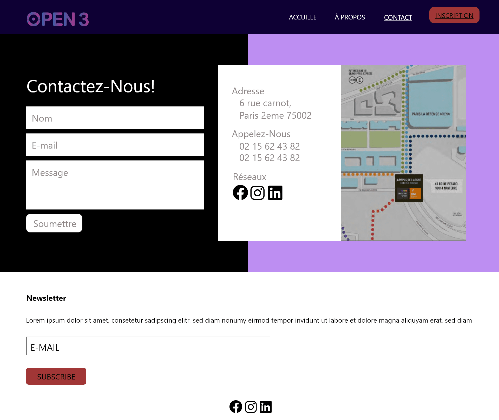

Bap Open 3
The objective was to create a website for the Open-3 where students could register, It is simply lectures followed by a hackathon on 48h non stop, presented by professionals of the DW.

 

This project allowed me to improve my team cohesion, manage my stress. From a technical point of view, HTMLL/SCSS/JS and Php were mainly used for the listing side